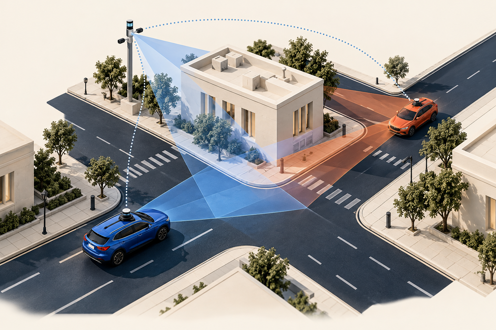
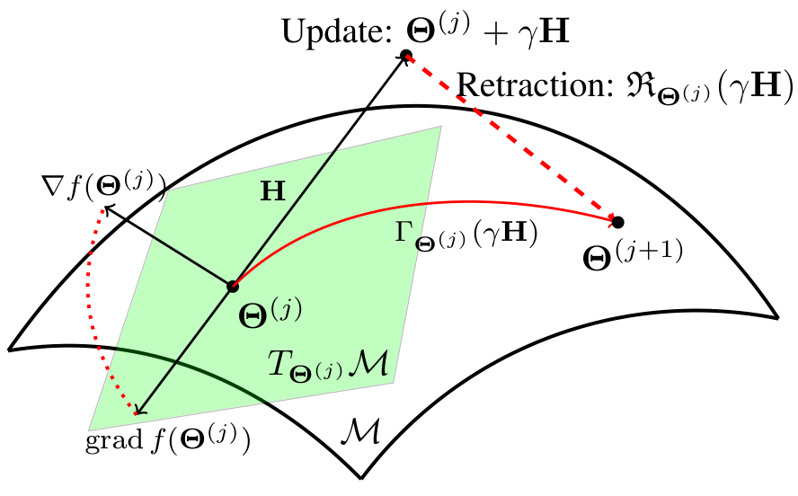
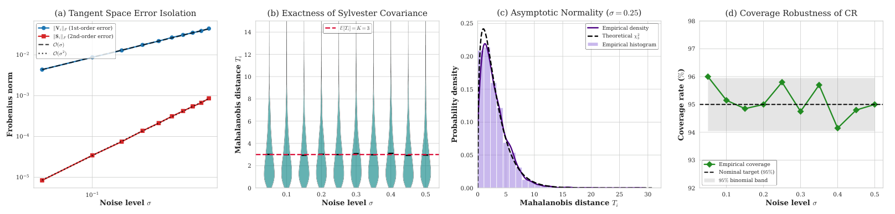
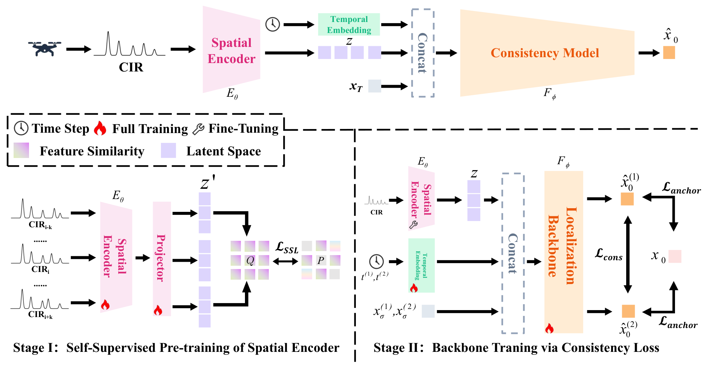

Collaborative
perception
Collaborative perception for autonomous driving systems, connecting information across agents and viewpoints.
SHANGHAI JIAO TONG UNIVERSITY
PhD student in Electronic Information
School of Integrated Circuits
Joint training with Shanghai AI Laboratory
RESEARCH
My research focuses on collaborative perception for autonomous driving, manifold optimization theory, and privacy and security in agent systems.

Collaborative perception for autonomous driving systems, connecting information across agents and viewpoints.

Geometry-aware optimization and statistical inference, with an interest in uncertainty quantification under manifold constraints.
Privacy and security in agent systems, exploring how intelligent agents can interact and collaborate safely.

Characterizing estimation uncertainty on the orthogonal group through second-order analysis and data-driven confidence regions.

Combining self-supervised spatial representations, consistency generation, and multi-base-station fusion for data-efficient UAV localization.
PhD student · Electronic Information
School of Integrated Circuits
Joint training with Shanghai AI Laboratory
B.Eng. · Information Engineering
Chien-Shiung Wu College · Future Technology Class
Reviewer
SEU BYD Scholarship · Wang Qi Scholarship · SEU Merit Student (2022–2024)
For research conversations and collaboration.